<html>
<head>
<title>ATUG Toolbook Tips -  Toolbook Tips &amp; Techniques Web Site Reviews - III</title>
<link REL="ToC" HREF="httoc.htm">
<link REL="Index" HREF="htindex.htm">
<link REL="Previous" HREF="TOCONV28.htm"></head>
<body BGCOLOR="#D5E8D5" BACKGROUND="images/grnmarbl.gif">
<script>var d=document.documentElement;d.style.visibility="hidden";addEventListener("load",function(){d.style.visibility="visible"});setTimeout(function(){d.style.visibility="visible"},5000);</script>


<p align="center"><a href="https://abulka.github.io/toolbook/" target="_blank">Australian Toolbook User Group</a></p>
<h2 ALIGN="CENTER">
<center>Toolbook Tips &amp; Techniques</center></h2>
<p ALIGN="CENTER">
<a HREF="TOCONV28.htm" TARGET="_self"></a>

<p>
<ul>
<li>
<font FACE="Arial" SIZE="+1"><em><strong>Tips on</strong></em><p>
<a HREF="#E17E23" NAME="LOCE17E23">Web Site Reviews - III</a></font>
<ol>
<li>
<font FACE="Arial" SIZE="+1">
<a HREF="#E18E99">Simpkinson Toolbook Tutorial</a></font>
<li>
<font FACE="Arial" SIZE="+1">
<a HREF="#E18E100">Tim Dutcher's Power Tools site</a></font>
<li>
<font FACE="Arial" SIZE="+1">
<a HREF="#E18E101">Knowledge Arts</a></font>
<li>
<font FACE="Arial" SIZE="+1">
<a HREF="#E18E102">Australian TUG &amp; Toolbook Mag</a></font>
<li>
<font FACE="Arial" SIZE="+1">
<a HREF="#E18E103">Servo Splash Loader Site</a></font>
<li>
<font FACE="Arial" SIZE="+1">
<a HREF="#E18E104">Sang Park's new database access DLL</a></font>
<li>
<font FACE="Arial" SIZE="+1">
<a HREF="#E18E105">Widget Wizard</a></font>
<li>
<font FACE="Arial" SIZE="+1">
<a HREF="#E18E106">Zimmerman Free Stuff</a></font></ol></ul>
<hr WIDTH="80%" ALIGN="CENTER">
<a NAME="E17E23"></a>
<hr WIDTH="50%" ALIGN="CENTER">
<br>
<a NAME="E18E99"></a>
<h3><p ALIGN="CENTER">
<font FACE="Arial" SIZE="+3" COLOR="#008000"><b>Simpkinson Toolbook Tutorial</b></font></h3>
<pre>
<center>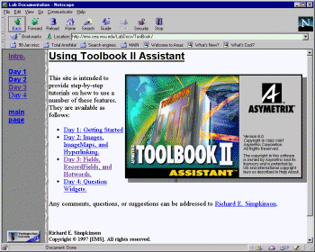
<a HREF="http://ems.cea.wsu.edu/LabDocs/ToolBook/">http://ems.cea.wsu.edu/LabDocs/ToolBook/</a></center></pre>
<p>This site hosts an entire tutorial in using Toolbook II Assistant.  There are step by step screenshots for the following procedures:
<pre>
<font FACE="Courier New" COLOR="#800040"><b>    Day 1: Getting Started </b>
<b>    Day 2: Images, ImageMaps, and Hyperlinking. </b>
<b>    Day 3: Fields, RecordFields, and Hotwords. </b>
<b>    Day 4: Question Widgets.</b></font></pre>
<p>For example, selecting day 3 from the above list takes you to:
<pre>
<center>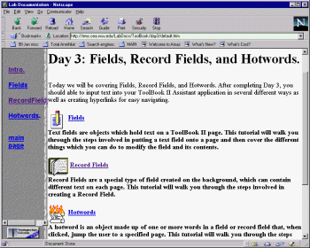</center></pre>
<p>and then selecting &#145;recordFields&#146; we eventually get to:
<pre>
<center>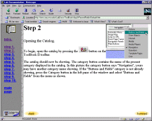</center></pre>
<p>Remember that this site is for learning the non-scripting version of Toolbook viz. Toolbook Assistant.
<hr WIDTH="50%" ALIGN="CENTER">
<br>
<a NAME="E18E100"></a>
<h3><p ALIGN="CENTER">
<font FACE="Arial" SIZE="+3" COLOR="#008000"><b>Tim Dutcher's Power Tools site</b></font></h3>
<pre>
<center>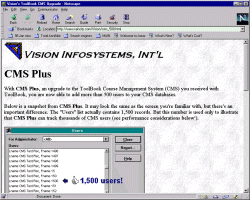
<a HREF="http://www.raincity.com/Vision/">http://www.raincity.com/Vision/</a></center></pre>
<p>Various tools here, including an extension to Toolbook CMS (Course Management System) to allow &gt; 500 users.  Also available is the plug-in &quot;PowerTools 1.5 for ToolBook&quot; which lists viewers, pages, resources etc. and has a to-do list and bug tracker allowing you to add notes to any page. Great for team development. Sample books include:
<p> 
<pre>
<font FACE="Courier New" COLOR="#800040"><b>A Microsoft Outlook-style user interface.</b>
<b>Lock objects into a fixed position at author level.</b>
<b>Determine word clicked in an activated field.</b>
<b>Dumps text of all fields to file.</b>
<b>Dumps Asymetrix Knowledge Base to text files.</b></font></pre>
<hr WIDTH="50%" ALIGN="CENTER">
<br>
<a NAME="E18E101"></a>
<h3><p ALIGN="CENTER">
<font FACE="Arial" SIZE="+3" COLOR="#008000"><b>Knowledge Arts</b></font></h3>
<pre>
<center>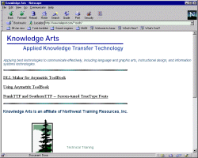
<a HREF="http://www.teleport.com/~rossh/">http://www.teleport.com/~rossh/</a></center></pre>
<p>Two useful things here - <b>DLL Maker</b> and<b> </b>the tutorial information book: <b>Using Asymetrix ToolBook.</b>
<pre>
<center>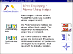</center></pre>
<p><b>DLL Maker</b> is a small book written with ToolBook 4.0. To use DLL Maker, you key in the C template for the DLL function you want to use. DLL Maker uses the template to create an OpenScript subroutine that you can copy and paste into your toolbook. It allows you to use the DLL function without having to remember which C types correspond to which OpenScript types, declaring linkDLLs, and allocating and freeing Windows memory.
<p>Also available is the aplication <b>&#145;Using Asymetrix ToolBook&#146;</b> - a downloadable, comprehensive guide that explains basic and advanced techniques for using ToolBook.  The full version of this guide is still under development.
<hr WIDTH="50%" ALIGN="CENTER">
<br>
<a NAME="E18E102"></a>
<h3><p ALIGN="CENTER">
<font FACE="Arial" SIZE="+3" COLOR="#008000"><b>Australian TUG &amp; Toolbook Mag</b></font></h3>
<pre>
<center>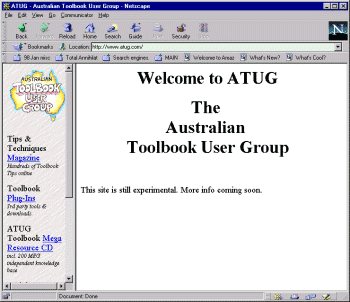
<a HREF="https://abulka.github.io/">https://abulka.github.io/</a></center></pre>
<p>This site contains an extensive online ToolbookTips &amp; Tricks Magazine, plus offers an innovative offline reader for all the online Toolbook discussions (both the Internet and Compuserve) over the last 5 years - fully indexed - downloadable and on CD.
<hr WIDTH="50%" ALIGN="CENTER">
<br>
<a NAME="E18E103"></a>
<h3><p ALIGN="CENTER">
<font FACE="Arial" SIZE="+3" COLOR="#008000"><b>Servo Splash Loader Site</b></font></h3>
<pre>
<center>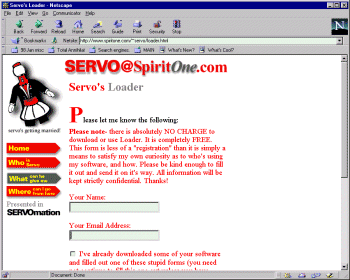
<a HREF="http://www.spiritone.com/~servo/loader.html">http://www.spiritone.com/~servo/loader.html</a></center></pre>
<p>A simple utility which will display a splash-screen window as quickly as possible. Available for both 16- and 32-bit Windows. JPEG support. Freeware 
<p>Loader is a simple utility which will display a splash-screen-like window as quickly as possible, then, in the background, launch a second application based on a series of parameters in a configuration file.  It's main purpose is to provide a very fast method of displaying a splash-screen or bitmap without interfering with the launching of the second application.
<p>
<b><i>Why would you want it?</i></b>
<br><i>Toolbook startup time is notoriously slow - well at least in the </i><i>sense that you don't see anything happening for quite a while </i><i>after you start the program.  You can try to display a splash </i><i>screen - but even this will take time to show.  The above tool </i><i>solves this problem - I haven't tried it, but I intend to.</i>
<hr WIDTH="50%" ALIGN="CENTER">
<br>
<a NAME="E18E104"></a>
<h3><p ALIGN="CENTER">
<font FACE="Arial" SIZE="+3" COLOR="#008000"><b>Sang Park's new database access DLL</b></font></h3>
<pre>
<center>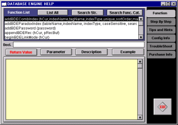
<a HREF="http://members.aol.com/mpspark/">http://members.aol.com/mpspark/</a></center></pre>
<p>This is a new dll that uses the Borland BDE (16 bit) for paradox database access.  Here are the features that the author claims makes this dll so powerful as compared to Asymetrix's paradox access DLL:
<ul>
<li>Specifically designed and optimized for Toolbook.
<li>Tremendous improvement in multiple record search and retrieval
<li>performance.
<li>Simplified record and BLOB handling means reduction in program codes.
<li>A single call can handle dBASE, Paradox, and SQL tables unless the call is specific only to a particular table type. This also means you can join dBASE and Paradox tables on the fly to produce a unique dataset. Not only that, you can write one set of code that will work not only on Paradox and dBASE in native modes, but also on any other ODBC compliant database. Even when you upsize the database most of the code works as is.
<li>Table field mapping feature makes it easy to retrieve data.
<li>Search by Range enables you to collect all the records that meet certain criteria instantly, in a single call.
<li>Filtering makes it possible to search for records in multiple criteria without an index.
<li>Wildcard string search can be done on both character (alpha) type fields and Memo BLOB type fields, and its performance is remarkable.
<li>Tables can be linked, even across different table types, to make it easier to find records in another table.
<li>Much wider range of data types are supported: Paradox supports: Alpha, Number(float), Money, Short(16bit int), Long (32bit int), BCD(64 bit int), Date, Time, Timestamp, Memo, Graphic, Binary. Logical(BOOL), Autoincrement, and Bytes. dBASE supports: Alpha, Number, Date, Memo, Binary, Logical, and Typed binary. You may use OLE, and formatted field types but you will have to provide hooks to it.
<li>Supports all language drivers. For example, &quot;ascii, international, Chinese, German, Spanish, Korean, Greek... &quot;
<li>Supports up to Paradox 5 and dBASE for Windows 5. As mentioned above, now dBASE users can use binary BLOBs (Graphics and sound...). Paradox 7 tables will be supported ONLY upon request.
<li>Enables Paradox tables to run off CD.
<li>You can use SQL along with other code level calls. This provides handy access to the local table's data using easy SQL statements like SUM, AVG, ORDER BY...
</ul>
<p><i>Now all we need is a 32 bit version of this for use in Toolbook </i><i>6!&#133;</i>
<hr WIDTH="50%" ALIGN="CENTER">
<br>
<a NAME="E18E105"></a>
<h3><p ALIGN="CENTER">
<font FACE="Arial" SIZE="+3" COLOR="#008000"><b>Widget Wizard</b></font></h3>
<pre>
<center>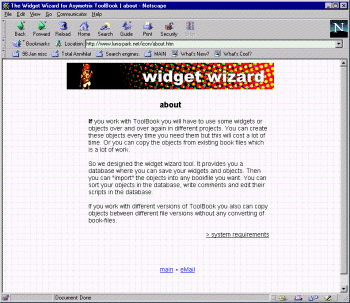
<a HREF="http://www.luna-park.net/icon/about.htm">http://www.luna-park.net/icon/about.htm</a></center></pre>
<p>This site is German in origin, and the tool is written for English users e.g. the tooltips &amp; help files are in English.  From the site:
<p><i>&quot;If you work with ToolBook you will have to use some widgets </i><i>or objects over and over again in different projects. You can </i><i>create these objects every time you need them but this will </i><i>cost a lot of time. Or you can copy the objects from existing </i><i>book files which is a lot of work. &quot;</i>
<p><i>&quot;So we designed the widget wizard tool. It provides you a </i><i>database where you can save your widgets and objects. Then </i><i>you can &quot;import&quot; the objects into any bookfile you want. You </i><i>can sort your objects in the database, write comments and edit </i><i>their scripts in the database. &quot;</i>
<pre>
<center>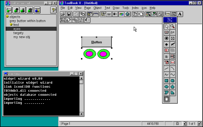</center></pre>
<p ALIGN="CENTER">
<center><b>Figure </b><b>42</b><b> - the palette on the top left is where you select the </b><b>item you want to inset into your Toolbook application.  You </b><b>can also press a palette button to add the currently selected </b><b>Toolbook object into the list.</b></center>
<p>If you work with different versions of ToolBook you also can copy objects between different file versions without any converting of book-files. This is because the objects are stored as text descriptions inside in regular dbf (dbase) files!
<pre>
<center>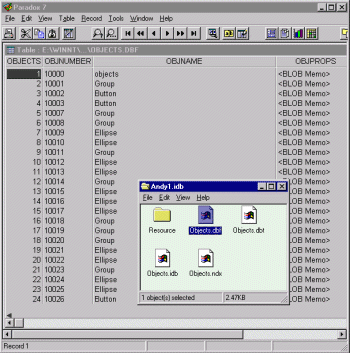</center></pre>
<p ALIGN="CENTER">
<center><b>Figure </b><b>43</b><b> - Notice the toolbook object types being stored in </b><b>a regular dbf database.</b></center>
<p>Note that you you need to add a system book to your startup books, namely
<pre>
<font FACE="Courier New" COLOR="#800040"><b>ww_v080.sbk</b></font></pre>
<p>which will then prompt you for the other system book, viz.
<pre>
<font FACE="Courier New" COLOR="#800040"><b>Iconeidb.sbk</b></font></pre>
<p>and that there are some important settings stored in a file called ICON.INI in your windows system folder e.g.
<pre>
<font FACE="Courier New" COLOR="#800040"><b>[EIDB]</b>
<b>file=C:\MYDOCU~1\TBK5APPS\DBWIDG~1\ICONEIDB.SBK</b>
<b>[database]</b>
<b>file=C:\MYDOCU~1\TBK5APPS\DBWIDG~1\ANDY1.idb</b>
<b>[browser]</b>
<b>bringUp=true</b>
<b>[status]</b>
<b>bringUp=false</b>
<b>message=true</b></font></pre>
<hr WIDTH="50%" ALIGN="CENTER">
<br>
<a NAME="E18E106"></a>
<h3><p ALIGN="CENTER">
<font FACE="Arial" SIZE="+3" COLOR="#008000"><b>Zimmerman Free Stuff</b></font></h3>
<pre>
<center>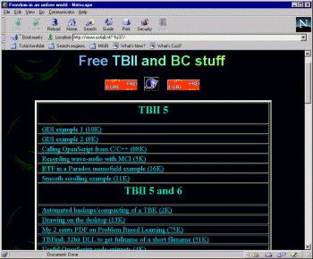</center></pre>
<p><u>http://come.to/geek</u>
<p>Here is a site that offers quite a few handy Toolbook coding examples, plus a good selection of links to other Toolbook sites.  E.g.
<pre>
<font FACE="Courier New" COLOR="#800040"><b>Automatic backups/compacting of a TBK; 5+ (2K) </b>
<b>Blackbox - TB performing genetic code; 6 (12K) </b>
<b>Calling OpenScript from C/C++; 5 (88K) </b>
<b>Communication between Win32 C++ and TB apps</b>
<b>Computing CRC32 of file/string with DLL; 6 (51K) </b>
<b>DirectSound DLL for ToolBook BETA</b>
<b>Drawing on the desktop; 5/6 (23K) </b>
<b>Frank Jularic's OpenScript editor Rainbow v0.20;</b>
<b>GDI examples </b>
<b>Recording wave-audio with MCI; 5 (5K) </b>
<b>Resizing a bitmap-viewer; 6 (289K) </b>
<b>RTF in a Paradox memofield example; 5 (16K) </b>
<b>Running TBK's inside Office documents (PDF)</b>
<b>Smooth scrolling example; 5/6 (17K) </b>
<b>Stupid fun with viewers; 6 (9K) </b>
<b>How to get fullname of a short filename</b></font></pre>
<p>For example - here is a book that shows how to store rich text fields in a paradox database:
<pre>
<center>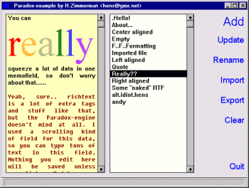</center></pre>
<p>For example here is the code that write the contents of the rich text field to the paradox table:
<pre>
<font FACE="Courier New" COLOR="#800040"><b>to handle buttonClick</b>
<b>   </b><b>system string alias;</b>
<b>   </b><b>local long hBlob;</b>
<b>   </b><b>request &quot;Do you really want to update the table?&quot;  with </b><b>&quot;Sure&quot; or &quot;No!&quot;;</b>
<b>   </b><b>if(it&lt;&gt;&quot;Sure&quot;)then</b>
<b>   </b><b>   </b><b>break buttonClick;</b>
<b>   </b><b>end</b>
<b>   </b><b>-- update the current record's </b>
<b>   -- Data-field with whatever is in the rtf-field</b>
<b>   </b><b>-- never forget the +1 in this next line!!</b>
<b>   </b><b>hBlob=openPXBlobWrite(alias,&quot;Data&quot;, \</b>
<b>     charCount(richtext of field &quot;rtfField&quot;)+1,0);</b>
<b>   </b><b>send dbdo setPXMemoBlob(hBlob, \</b>
<b>     richtext of field &quot;rtfField&quot;);</b>
<b>   </b><b>send dbdo closePXBlob(hBlob,1);</b>
<b>   </b><b>send dbdo updatePXRecord(alias);</b>
<b>end</b></font></pre>
<p><b>END OF ATUG TOOLBOOK TIPS MAGAZINE</b>&#07;</td>

<hr>
<p>To access <em>thousands </em>more tips offline <em>-</em> download <a href="https://abulka.github.io/toolbook/" target="_blank">Toolbook Knowledge Nuggets</a>&nbsp; </p>

<p ALIGN="CENTER">
<a HREF="TOCONV28.htm" TARGET="_self"></a>
</body></html>
